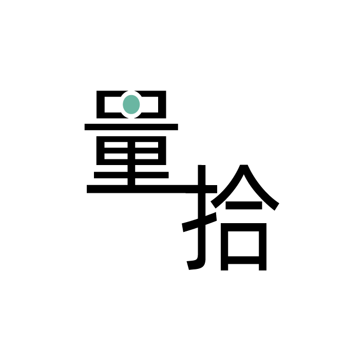

{{paparInfo.detail.searchFrom}}
来自量拾：{{paparInfo.detail.pubTime.substring(0,10)}}
扫描查看全文
{{paparInfo.detail.summary[0].titleZh}}
{{paparInfo.detail.title}}
论文简要：
{{paparInfo.detail.summary[0].briefIntroduction}}
用户{{paparInfo.wxuser.nickName}}分享
这是TA阅读的第{{paparInfo.history}}篇文献
量拾：打破信息焦虑·提升认知
关注公众号
打破信息焦虑
提升认知之旅
扫一扫查看
文章总结信息